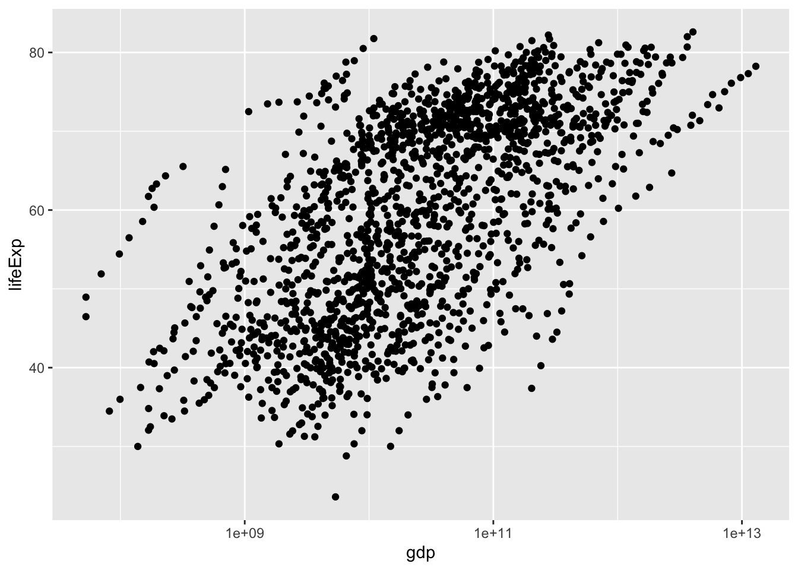

Instructor Teaching Notes for Lesson 28
Math300Z
Two crucial words will be introduced an elaborated upon this week (Lessons 28-30).
- Covariate: An explanatory variable which we can measure and think is important to the working of the system (that is, we would include it in a DAG for the system), but in which we have little or no direct interest.
- Confound: One of the nicest words in statistics because the origin word branched into two different meanings both of which are highly relevant to our purpose.
- To “confuse” or, in the Middle English, to “rout” or “bring to ruin.”
- To mix together (from Latin and French)
Background review
The fundamental framework that we use over and over again in this course involves:
- A data frame holding variables of interest.
- A model specification which
- a response variable (always quantitative) which we’ll write generically as
y - zero or more explanatory variables
y ~ 1y ~ 1 + x(usually written as the shorthandy ~ x)y ~ 1 + x + z(with potentially more explanatory variables)
- a response variable (always quantitative) which we’ll write generically as
- Training the model (also called fitting) to produce coefficients.
- For the “intercept” (that is, the
1term) there is one coefficient. - For each quantitative explanatory variable there is one coefficient.
- For any categorical explanatory variable with k levels, there are k-1 coefficients.
- When a model includes “interactions” (as signified by using
*rather than+in the model specification), there are additional coefficients. But we are not emphasizing such models in Math 300.
- For the “intercept” (that is, the
Example: Life expectancy
Using the gapminder::gapminder data.
Are life-expectancy (at birth) and wealth (measured by GDP) related?
ggplot(gapminder, aes(x=gdp, y=lifeExp)) +
geom_point() What do you like or dislike about the above graph?
ggplot(gapminder, aes(x=gdp, y=lifeExp)) +
geom_point() +
scale_x_log10()
Compare these two models:
lm(lifeExp ~ gdp, data=gapminder) |> R2() n k Rsquared F adjR2 p df.num df.denom
1 1704 1 0.0667536 121.7413 0.06620528 0 1 1702lm(lifeExp ~ gdp + year, data=gapminder) |> R2() n k Rsquared F adjR2 p df.num df.denom
1 1704 2 0.2279324 251.0875 0.2270246 0 2 1701year is a covariate. We want to do the comparison holding year constant.
lm(lifeExp ~ gdp, data=gapminder |> filter(year == 2007)) |> R2() n k Rsquared F adjR2 p df.num df.denom
1 142 1 0.05262836 7.777275 0.04586142 0.006016776 1 140Discuss whether gdp is the right variable to look at to measure wealth.
log(gdp)?- Adjusting for population size
“Intensive” vs “extensive” variables
temperature (intensive)
pressure (intensive)
mass (extensive)
heat capacity (extensive)
life expectancy (intensive)
GDP (extensive)
Population (extensive)
Take care when mixing together intensive and extensive variables in a model.
ggplot(gapminder, aes(x=gdpPercap, y=lifeExp, color=country)) +
geom_point() +
scale_x_log10() +
theme(legend.position = "none")Covariates can change coefficients
Predict when this will happen.
Correlation coefficient as angle.
In-class activity
See when adding a covariate changes the coefficients. 1. Look for maximally and minimally correlated variable pairs in Anthro_F 2. Fit two nested models for BFat, one with a single explanatory variable from the pair and the other with both variables from the pair. 3. Repeat using Height just to show that it’s the explanatory variables that are determining the shift.
lm(PThigh ~ MThigh, data=Anthro_F) |> conf_interval() # A tibble: 2 × 4
term .lwr .coef .upr
<chr> <dbl> <dbl> <dbl>
1 (Intercept) 3.71 7.49 11.3
2 MThigh 0.897 0.970 1.04lm(PThigh ~ MThigh + DThigh + Biceps + Calf, data=Anthro_F) |> conf_interval() # A tibble: 5 × 4
term .lwr .coef .upr
<chr> <dbl> <dbl> <dbl>
1 (Intercept) 1.21 4.99 8.78
2 MThigh 0.596 0.717 0.837
3 DThigh 0.0603 0.178 0.295
4 Biceps 0.126 0.294 0.463
5 Calf -0.0740 0.0194 0.113Anthro_F |> summarize(cor(Wrist, Waist))
# A tibble: 1 × 1
`cor(Wrist, Waist)`
<dbl>
1 0.660
> Anthro_F |> summarize(cor(Wrist, Biceps))
# A tibble: 1 × 1
`cor(Wrist, Biceps)`
<dbl>
1 0.705
> Anthro_F |> summarize(cor(Wrist, Age))
# A tibble: 1 × 1
`cor(Wrist, Age)`
<dbl>
1 -0.0748
> lm(BFat ~ Wrist, data=Anthro_F) |> conf_interval()
# A tibble: 2 × 4
term .lwr .coef .upr
<chr> <dbl> <dbl> <dbl>
1 (Intercept) -38.8 -26.4 -14.1
2 Wrist 2.29 3.08 3.87
> lm(BFat ~ Wrist + Age, data=Anthro_F) |> conf_interval()
# A tibble: 3 × 4
term .lwr .coef .upr
<chr> <dbl> <dbl> <dbl>
1 (Intercept) -39.9 -25.1 -10.4
2 Wrist 2.28 3.07 3.86
3 Age -0.408 -0.0575 0.293
> lm(BFat ~ Wrist + Knee, data=Anthro_F) |> conf_interval()
# A tibble: 3 × 4
term .lwr .coef .upr
<chr> <dbl> <dbl> <dbl>
1 (Intercept) -54.8 -43.1 -31.3
2 Wrist 0.339 1.20 2.06
3 Knee 0.943 1.29 1.64Simpson’s paradox
lm(zero_one(admit, one="admitted") ~ gender, data = UCB_applicants) |> conf_interval()# A tibble: 2 × 4
term .lwr .coef .upr
<chr> <dbl> <dbl> <dbl>
1 (Intercept) 0.281 0.304 0.326
2 gendermale 0.113 0.142 0.170lm(zero_one(admit, one="admitted") ~ gender + dept, data = UCB_applicants) |>
conf_interval()# A tibble: 7 × 4
term .lwr .coef .upr
<chr> <dbl> <dbl> <dbl>
1 (Intercept) 0.621 0.660 0.699
2 gendermale -0.0485 -0.0184 0.0117
3 deptB -0.0563 -0.0103 0.0356
4 deptC -0.347 -0.303 -0.260
5 deptD -0.354 -0.311 -0.268
6 deptE -0.452 -0.403 -0.354
7 deptF -0.631 -0.586 -0.542